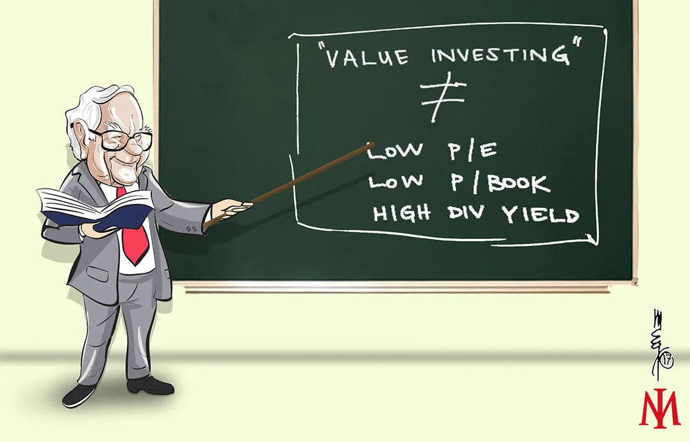
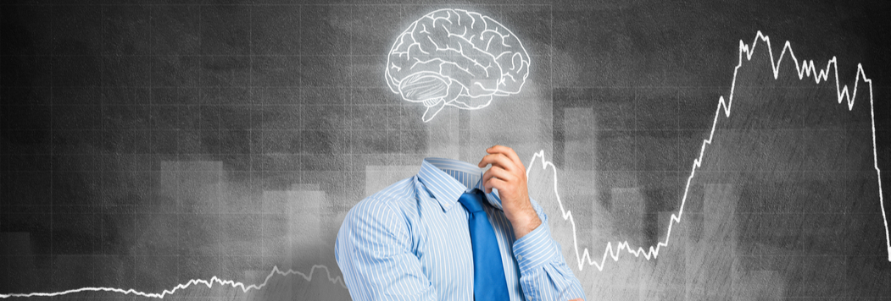
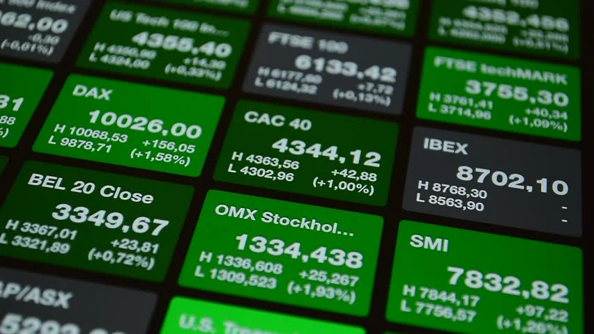

Best investment books in 2022
Investing is a successful approach
to use your money and possibly
increase your fortune . Your money
may grow in value and outpace inflation if you make wise investment
decisions. The power of compounding and the trade-off between risk and
return are the main reasons
investment has a higher growth potential.
In topbooksinvestig.com you will
find the best information about the different investment books. There
are different types of books and we will cover all of them:
- Value Investing
books
-
Technical analysis books
- Psycology for invesment books
-
Indexing & Market Efficiency
books
Value investing

Value investing is an investment strategy that involves the use of
fundamental analysis to find securities that are selling below their perceived intrinsic
value. While there is no single way to calculate intrinsic value,
analysts and investors commonly use
measures such as a stock's price-to-earnings (P/E) ratio or
price-to-book (P/B) ratio
>to identify value stocks. A value investing strategy is generally
contrasted with a growth investing strategy, which seeks to find
stocks with the best ability to grow their earnings over time. As a
result, value stocks generally pay dividends and have lower relative
P/E multiples,
whereas growth stocks generally do not pay dividends and have higher
P/E multiples.
In this page you will find the best books of
Value Investing
Technical analysis
Based on market data,
technical analysis is a tool or strategy used to forecast the
likely future price movement of a security, such as a stock or currency pair. The idea that all
market participants' aggregate buying and selling accurately reflects
all pertinent information regarding a traded security and subsequently
assigns a fair market value to the security is the basis for the
legitimacy of technical analysis.
Technical traders think that
the most accurate predictor of future price action is the market's
recent or current price action.
Technical traders are not the only ones that employ technical
analysis. Many fundamental traders utilize technical analysis to
identify favorable, low-risk buy entry price levels after using
fundamental analysis to decide whether to purchase into a market.
In this page you will find the best books of
Technical analysis
Psycology for invesment

Psychology informs us that people are biased, mistaken, and
susceptible to perceptual illusions when processing information. Therefore, it stands to reason that
bias, inaccuracy, and perceptual illusions will also affect our
financial judgments.
The primary lesson of behavioural finance, which supports this
claim, is that psychology genuinely permeates every aspect of the
financial world.
According to conventional financial theory, markets are
efficient, investors are logical, and risk alone determines expected
profits.
Behavioral finance theory, on the other hand, views investors as
typical and markets as inefficient,
with projected returns influenced by more than just risk—emotional
variables, for instance, play a significant role.
In
actuality, this implies that even when we think we are making logical,
reasoned decisions, feelings like fear and greed can overcome them and
put our wise investing decisions in jeopardy. What then can we do to
combat these negative feelings?
In this page you will find the best books of
Psycology for invesment
Indexing & Market Efficiency

NDEX investing is a good way to control risk and generate steady
returns. The strategy's proponents avoid active investing since,
according to contemporary financial theory, it is impossible to
"beat the market" after accounting for trading fees and taxes.
Index funds often offer lower management costs and expense ratios
(ERs) than actively managed funds since index investing adopts a
passive strategy. Without a portfolio manager, tracking the market is
straightforward, which enables providers to charge reasonable costs.
Because they execute trades less frequently than active funds,
index funds also tend to be more tax-efficient.
More importantly,
diversifying against risks through index investing is a powerful strategy. An index fund is made
up of many different investments as opposed to just a handful. By
doing this, unsystematic risk associated with a particular business or
sector is reduced while still maintaining expected profits.
The S&P 500 is the most popular
benchmark for many index investors to compare performance against
because it represents the state of the American economy. Other
well-known index funds monitor the performance of the corporate bond
market as well as the Dow Jones Industrial Average (DJIA).
In this page you will find the best books of
Indexing & Market Efficiency